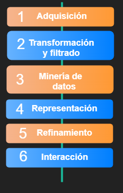

Contenido
Marco Teórico
Problemática
Solución propuesta
Conclusiones
Trabajo a futuro
Referencias
Marco teórico
Numismática
Es el estudio y colección de monedas y papel emitido por una nación con el diseño oficial del país.
Es conocida desde los tiempo del Imperio Romano.
Marco teórico
Visualización de datos
Proceso de búsqueda, interpretación y comparación de datos que permite un conocimiento en profundidad y detalle,
con el objetivo que dar una explicación comprensible para el usuario.
Problemática
El Banco de la República de Colombia tiene un sistema de información que contiene una gran cantidad de datos de monedas,
billetes y otros recursos económicos como estampillas o sellos, sin embargo, dicha información sólo puede ser accedida por
algunos funcionarios del banco. De aquí surge la pregunta: ¿Qué hacer con los datos de mil monedas que narran la historia colombiana?.
Problemática
Visita guiada a la Casa de la Moneda
El recorrido se realizó en orden histórico comenzando con el concepto de trueque y el valor que las comunidades le daban a objetos cotidianos, pasando así, por las piedras preciosas y por las monedas que fueron hechas en su totalidad en oro.
Solución propuesta
Gracias a la flexibilidad que ofrece P5.js, se siguió la metodología de las 6 fases de un proyecto de visualización de datos:

Limitaciones
- Debido a que no se contó con los datos del Banco de la República de Colombia, como inicialmente se tenía pensado, se optó por buscar una base de datos que contara con características propias de una colección numismática.
Conclusiones
- El trabajo realizado es un buen inicio para conocer conceptos y tratamiento de la información en el estudio de la Numismática, así como de tecnologías como Processing para Javascript.
- En un proyecto de Visualización de datos, es necesario conocer de antemano el contexto del conjunto de datos, con el fin de representar la información de una manera más apropiada.
- P5.js, la versión de Processing para Javascript, es una herramienta poderosa, ya que permite la interacción con elementos DOM de HTML.
Trabajo a futuro
- Adaptación de este modelo de Visualización a los datos de las monedas proveídos por el Banco de la República de Colombia.
- Aprovechar las ventajas que tiene Processing para implementar un modelo en 3D que permita visualizar las monedas, permitiendo movimientos de rotación sobre los ejes x, y y z.
- Implementar técnicas de minería de datos sobre el conjunto de monedas del Banco de la República de Colombia.